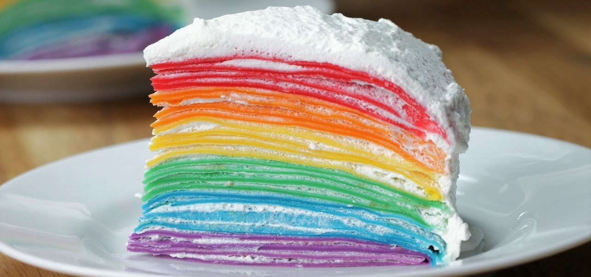

Ingredients
for 10 servings
| Melted butter |
6 tablespoons |
| Milk |
6 cups(710 ml) |
| Flour |
2¼ cups(180 g) |
| Sugar |
7 tablespoons |
| Red food coloring |
1 drop |
| Orange food coloring |
1 drop |
| Yellow food coloring |
1 drop |
| Green food coloring |
1 drop |
| Blue food coloring |
1 drop |
| Purple food coloring |
1 drop |
| Whipped cream |
6 cups(1.4 L) |
Directions
- In a bowl, whisk flour and sugar. Mix in eggs, then gradually mix in butter and warm milk, alternating between the two.
- Evenly divide the batter into 6 bowls. Add a few drops of food coloring to each bowl, and whisk until fully incorporated and the batter is colored.
- On a nonstick skillet over medium heat, pour ⅓ of the purple crepe batter, and tip the pan to cover the entire bottom surface. Cook the crepe begins to gently bubble and cook through, then flip. Repeat until all of the different color crepe batter is used.
- Stack crepes on top of each other, starting with purple, then blue, green, yellow, orange, and red, with whipped cream between each layer.
- Cover the crepe cake in whipped cream, so that it’s fully white on the outside.
- Slice, and serve.
- Enjoy!